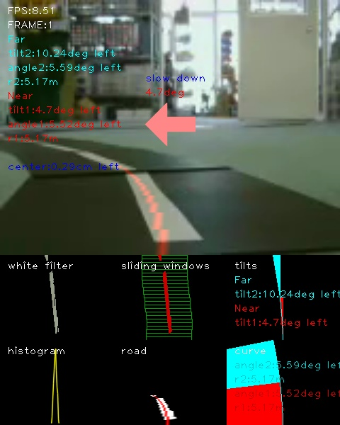
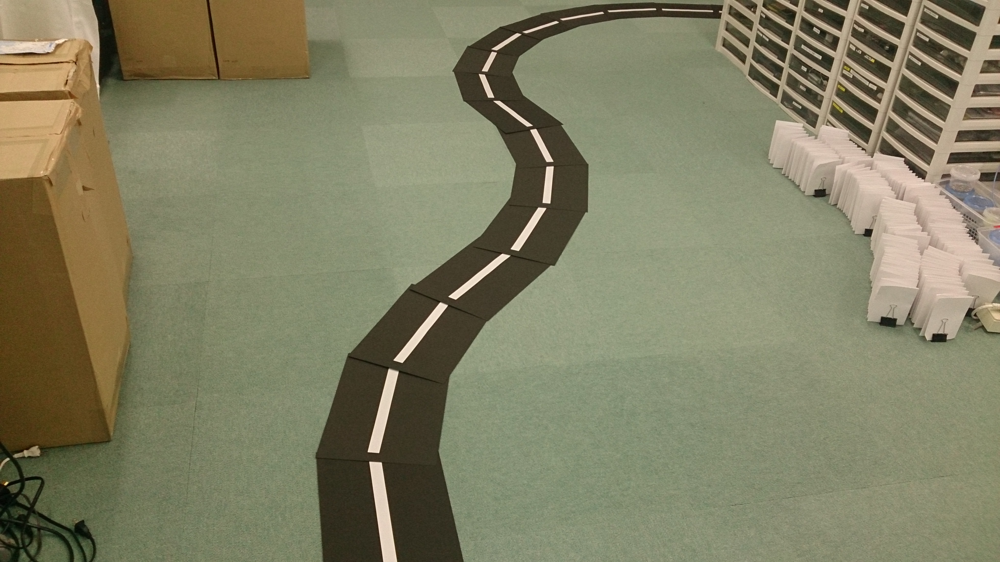

【タイトル】
レベル2：OpenCVでラインを検出する
【目標】
映像から、ラインを検出する
【画像】

【動画】
入力動画：./demo_lane/input4.mp4
出力動画：
【参考】
Programmatic lane finding: https://github.com/BillZito/lane-detection
level4:OpenCVでレーン検出する: level4_lane_detection
【実行環境】
Fabo TYPE1 ロボットカー
* USB Webcam
* Raspberry Pi3
* Jessie Lite
* docker
* Ubuntu
* Python 2.7
* OpenCV 2.4
Jetson TX2
* USB Webcam
* JetPack 3.1
* Ubuntu
* Python 3.6
* OpenCV 3.3
【実行】
インストール方法
コースの準備
Raspberry Pi3での実行方法
Jetson TX2での実行方法
【目次】
座標とカラーフィルタの確認
処理について
* ディレクトリとファイルについて
インストール方法
インストール済みのロボットカー/Jetson TX2を用意しているので省略します。
コースの準備
走行中のカメラ動画をdemo_lane/capture.mp4に用意してあるのでコースの準備は不要です。
自分でコースを用意する場合は、白色抽出しやすいようにはっきりとした白色でコースを作ってください。
急なカーブはカメラに映らなくなってしまうので、できるだけ緩やかなカーブでコースを作ってください。

Raspberry Pi3での実行方法
1. ロボットカーのRaspberry Pi3にログインします
USER:pi
PASSWORD:raspberry
ssh pi@192.168.xxx.xxx
2. rootになってdockerコンテナIDを調べます
sudo su
docker ps -aCONTAINER ID IMAGE COMMAND CREATED STATUS PORTS NAMES
2133fa3ca362 naisy/fabo-jupyter-armhf "/bin/bash -c 'jup..." 3 weeks ago Up 2 minutes 0.0.0.0:6006->6006/tcp, 0.0.0.0:8091->8091/tcp, 0.0.0.0:8888->8888/tcp hardcore_torvalds
STATUSがUpになっているコンテナIDをメモします。
3. dockerコンテナにログインします
docker exec -it CONTAINER_ID /bin/bash
docker exec -it 2133fa3ca362 /bin/bash
CONTAINER_IDにはベースイメージがnaisy/fabo-jupyter-armhfの2133fa3ca362を使います。
4. ロボットカーのディレクトリに移動します
cd /notebooks/github/RobotCarAI/level2_lane_detection/
lstotal 68
160846 4 ./ 160940 4 demo_lane/ 125612 24 opencv_lane_detection.py 142544 4 to_inverse_perspective_mapping.py
123628 4 ../ 160941 4 document/ 160851 4 output/ 142545 4 to_region_of_interest.py
142509 4 README.md 160849 4 lib/ 160942 4 test_images/ 142546 4 to_white.py
5. ライン検出コードを実行します
demo_lane/capture.mp4を入力として読み込み、1フレームずつ検出してoutput/result_capture.aviに保存します。
python opencv_lane_detection.pyFPS:6.43823125369
frame 229 Done!
途中、ライン検出に失敗したフレームでエラーを吐きながら進みますが実行には問題ありません。
Traceback (most recent call last):
File "opencv_lane_detection.py", line 211, in main
line_polyfit_const, pts_line = calc_line_curve(line_x,line_y,plot_y)
File "/notebooks/github/RobotCarAI/level2_lane_detection/lib/functions.py", line 799, in calc_line_curve
line_polyfit_const = polynormal_fit(line_y,line_x)
File "/notebooks/github/RobotCarAI/level2_lane_detection/lib/functions.py", line 777, in polynormal_fit
polyfit_const = np.polyfit(pts_y, pts_x, 2)
File "/usr/local/lib/python2.7/dist-packages/numpy/lib/polynomial.py", line 555, in polyfit
raise TypeError("expected non-empty vector for x")
TypeError: expected non-empty vector for x
6. 確認します
ブラウザでRaspberry Pi3のjupyterにアクセスします
http://192.168.xxx.xxx:8888/tree/github/RobotCarAI/level2_lane_detection/
jupyterのpasswordは別途説明があるかと思います。
実行によってできたデータは、
http://192.168.xxx.xxx:8888/tree/github/RobotCarAI/level2_lane_detection/output/result_capture.avi
になります。
この実行で使った入力用データは、
http://192.168.xxx.xxx:8888/tree/github/RobotCarAI/level2_lane_detection/demo_lane/capture.mp4
になります。
Jetson TX2での実行方法
1. Jetson TX2にログインします
USER:ubuntu
PASSWORD:ubuntu
ssh ubuntu@192.168.xxx.xxx
用意してあるJetson TX2はDockerを使っていないので、Raspberry Pi3の時のようなdockerコンテナへのログインはありません。
2. ロボットカーのディレクトリに移動します
cd ~/notebooks/github/RobotCarAI/level2_lane_detection/
lstotal 68
160846 4 ./ 160940 4 demo_lane/ 125612 24 opencv_lane_detection.py 142544 4 to_inverse_perspective_mapping.py
123628 4 ../ 160941 4 document/ 160851 4 output/ 142545 4 to_region_of_interest.py
142509 4 README.md 160849 4 lib/ 160942 4 test_images/ 142546 4 to_white.py
3. ライン検出コードを実行します
demo_lane/capture.mp4を入力として読み込み、1フレームずつ検出してoutput/result_capture.aviに保存します。
python opencv_lane_detection.pyFPS:34.37121576286537
frame 229 Done!
途中、ライン検出に失敗したフレームでエラーを吐きながら進みますが実行には問題ありません。
Traceback (most recent call last):
File "opencv_lane_detection.py", line 211, in main
line_polyfit_const, pts_line = calc_line_curve(line_x,line_y,plot_y)
File "/home/ubuntu/notebooks/github/RobotCarAI/level2_lane_detection/lib/functions.py", line 799, in calc_line_curve
line_polyfit_const = polynormal_fit(line_y,line_x)
File "/home/ubuntu/notebooks/github/RobotCarAI/level2_lane_detection/lib/functions.py", line 777, in polynormal_fit
polyfit_const = np.polyfit(pts_y, pts_x, 2)
File "/usr/local/lib/python3.6/dist-packages/numpy/lib/polynomial.py", line 555, in polyfit
raise TypeError("expected non-empty vector for x")
TypeError: expected non-empty vector for x
6. 確認します
ブラウザでJetson TX2のjupyterにアクセスします
http://192.168.xxx.xxx:8888/tree/github/RobotCarAI/level2_lane_detection/
jupyterのpasswordは別途説明があるかと思います。
実行によってできたデータは、
http://192.168.xxx.xxx:8888/tree/github/RobotCarAI/level2_lane_detection/output/result_capture.avi
になります。
この実行で使った入力用データは、
http://192.168.xxx.xxx:8888/tree/github/RobotCarAI/level2_lane_detection/demo_lane/capture.mp4
になります。
これ以降について
ライン検出は、level4(仮)の2本線から走行レーンを検出するコードを1本線に簡素化したものになります。
処理内容についてはlevel4(仮)を参考にしてください。level4(仮)が分かれば、要らないものを削っていくだけのコード修正でできる内容になります。
座標とカラーフィルタの確認
自分のライン動画で検出する場合、視点変更、ラインの色抽出を調整する必要があります。
関心領域の確認
python to_region_of_interest.py
視点の確認
python to_inverse_perspective_mapping.py
白色抽出の確認
python to_white.py
処理について
処理方法はlevel4:OpenCVでレーン検出する: level4_lane_detectionと同じ流れになります。
level4を1本線の処理に修正したものになるため、処理についてはlevel4を参考にしてください。
[ディレクトリとファイルについて]
- ディレクトリについて
- documment/ ドキュメント関連
- demo_lane/ デモ用ディレクトリ
- lib/ 関数ライブラリ
- test_images/ ROI,IPM,白色フィルタの確認用ディレクトリ
- output/ 出力用ディレクトリ(実行時に作成)
- ファイルについて
- README.md このファイル
- opencv_lane_detection.py ライン検出コード
- to_region_of_interest.py ROI座標確認コード
- to_inverse_perspective_mapping.py IPM座標確認コード
- to_white.py 白色フィルタ確認コード